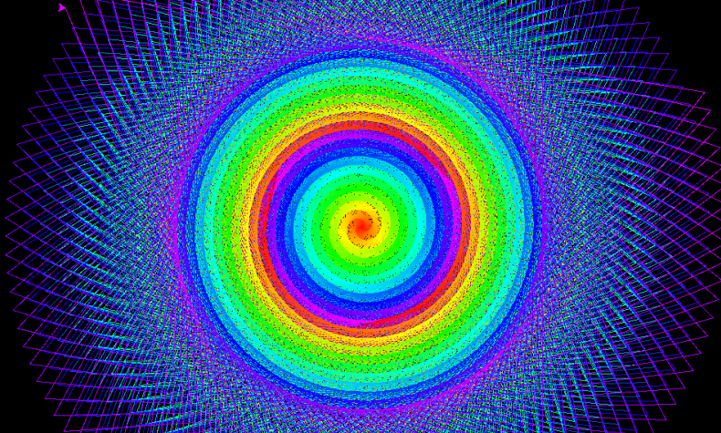
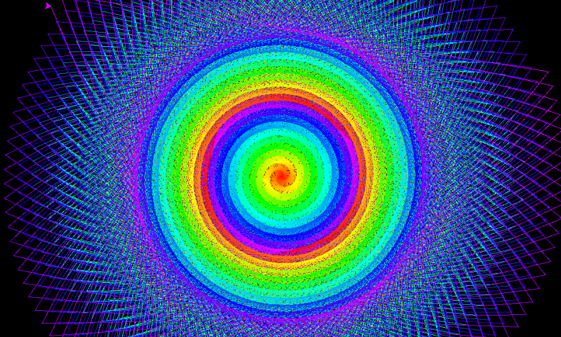

Turtle Crash Course
Il modulo della tartaruga :)
E' un modulo didattico predefinito in Python (non occorre installarlo, è già presente). Tramite codice
si muove una tartaruga (o più, o qualche forma che gli assomiglia) e si realizza qualche disegno più o meno
complicato imparando a programmare in maniera naturale.
Questo che trovate sotto è un Crash Course: non ci sono spiegazioni, ma informazioni buttate là e qualche obiettivo da raggiungere...
Buon divertimento!!!
Fare cose con turtle
Cominciamo dal programma assolutamente minimo, che però in realtà contiene già parecchie cosine su cui riflettere!
# qui importi la libreria turtle e tutte le sue cose
from turtle import *
# s è una variabile che rappresenta lo sfondo dove la tartaruga si muoverà
s = Screen()
# il titolo della finestra (guarda in alto)
s.title("Prima Prova")
# imposta la dimensione (in pixel) della finestra: width x height
s.setup(800,600)
# il colore di sfondo!
# Puoi anche indicarlo con la notazione esadecimale RGB: "#00FF00"
s.bgcolor("green")
# t è una variabile che rappresenta la tartaruga sullo schermo
t = Turtle()
# la forma della tartaruga. Può essere:
# "arrow" , "turtle" , "circle" , "square" , "triangle" , "classic"
t.shape("turtle")
# la dimensione della tartaruga. Il valore di base è 1. Se metti 2 significa il doppio...
t.shapesize(1.5)
# ... qui fai cose...
# quando clicchi sulla pagina il programma si chiude
s.exitonclick()
Leggi i commenti! Prova a modificare il colore di sfondo. Prova a modificare la forma e la dimensione della tartaruga. Prova a cliccare sulla pagina. Prova a cambiare il titolo.
Hai capito, dai... passiamo avanti!!!
Nota
Hai visto il commento "qui fai cose" nel codice sopra?
Da ora in poi inserirò semplici parti di codice che andranno inserite in quel punto per ogni programma. In questo modo potrò mettere in evidenza meglio il codice importante senza ripetere ogni volta le parti di base
Disegnare con Turtle
La tartaruga (o qualunque forma scegliate) può disegnare sullo schermo tramite una penna. In base alla direzione in cui essa è posizionata, quando le dici di camminare, se ha la penna abbassata scrive!
Le funzioni che supporta la tartaruga (nei nostri esempi, l'oggetto t), sono:
t.forward( ppp ): muove la tartaruga dippppixel in avanti (dritto al suo muso)-
t.backward( ppp ): muove la tartaruga dippppixel all'indietro -
t.left( ggg ): gira la tartaruga diggggradi verso sx (in senso antiorario) t.right( ggg ): gira la tartaruga diggggradi verso dx (in senso orario)-
t.setheading( dir ): orienta la tartaruga versodir:0--> destra ,90--> alto ,180--> sinistra ,270--> basso
Vediamo l'utilizzo di alcune di queste per disegnare 2 quadrati col bordo colorato.
# colore e dimensione della penna
t.pencolor("blue")
t.pensize(5) # in pixel
# disegno un quadrato blue di 100 pixel di lato
for n in range(4):
t.forward(100)
t.right(90)
# alzo la penna, così mi sposto senza scrivere
t.penup()
# mi muovo di 200 pixel, riabbasso la penna
t.forward(200)
t.pendown()
# disegno un quadrato rosso...
t.pencolor("red")
for n in range(4):
t.forward(100)
t.right(90)
Riempire le forme
Quando disegni una forma chiusa è possibile colorare il suo interno con un colore a scelto, anche diverso da quello del bordo (cioè della penna)!
Le funzioni in gioco sono le seguenti:
t.fillcolor( "color" ): imposta acoloril colore di riempimento di una forma chiusat.begin_fill(): inizia a riempire una format.end_fill(): smette di riempire una forma
La logica da applicare è molto semplice:
- Imposti il colore scelto con
fillcolor - lanci la funzione
begin_fill - disegni una forma chiusa
- lanci la funzione
end_fill
Al termine vedrai una forma chiusa colorata. Guardiamo un esempio di codice che è sempre più facile!
t.pencolor("blue")
t.pensize(2) # in pixel
t.fillcolor("yellow")
# disegno un triangolo blue, riempito di giallo
t.begin_fill()
for n in range(3):
t.forward(100)
t.left(120)
t.end_fill()
# alzo la penna, mi giro a dx, avanzo ....
t.penup()
t.setheading(0) # 0 = dx...
t.forward(200)
t.pendown()
# disegno un triangolo blue, riempito di giallo
t.begin_fill()
for n in range(3):
t.forward(100)
t.left(120)
t.end_fill()
Cose con la tartaruga
Mostra, nascondi, stampa la tartaruga!
t.showturtle(): mostra la tartarugat.hideturtle(): nasconde la tartarugat.stamp(): stampa una copia della tartaruga (o dellaforma) nel punto ove essa si trova.
Disegna cerchi, punti, parole
t.circle ( ppp ): disegna un cerchio di diametroppppixelt.dot ( ppp ,"color" ): disegna un punto (un cerchio pieno) di diametroppppixel e colorecolort.write ( "words" ): scrive le parole indicate nella posizione corrente
Muovi, velocizza, riporta a casa (al centro)
t.speed( vvv ): imposta la velocità della tartarugat.goto( x , y ): porta la tartaruga al punto(x,y)t.home(): porta la tartaruga a casa (al centro)
Disegni con Turtle
Ok... ormai avete capito tutto di Turtle... vi inserisco alcuni esercizi disegni che ho fatto io... Provate a farli uguale o a rifarli meglio!!!

 
